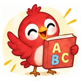
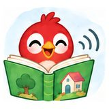
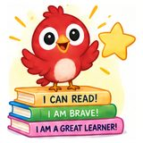
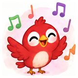
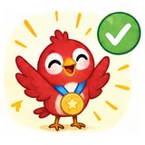
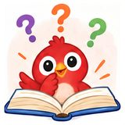
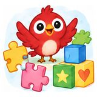
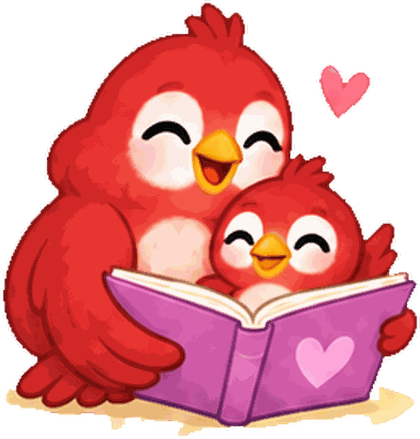

Nine pieces from Iris and Frank on reading aloud, building confidence, and why picture books still matter.

One of the greatest joys of childhood is watching a young mind discover something new. Whether it’s taking a first step, saying a first word, riding…
Every child begins life with endless possibilities, but none of them reach their full potential alone. Behind every first word, first step, first…

In an age where children are surrounded by fast-paced entertainment and endless digital distractions, the simple joy of reading a picture book…

Confidence is often described as the key to success, but for young children, confidence isn’t something they are born with, it is something they…

Long before children become fluent readers, they fall in love with the rhythm of language. They giggle at playful sounds, repeat familiar phrases,…

Every child enters the world with boundless curiosity. They eagerly explore new places, ask endless questions, and dream without limits. Yet as they…

Every child experiences moments of uncertainty. Whether it’s taking a first step, learning to read, making new friends, or trying something…
The lessons children learn during their earliest years often become the foundation for the adults they eventually become. While schools teach…

Childhood is a remarkable journey filled with first experiences. Every day brings new discoveries, fresh challenges, and opportunities to grow. From…

Read-aloud tips, activity ideas and family learning resources. We email rarely and never share your address.
No spam. Unsubscribe anytime.